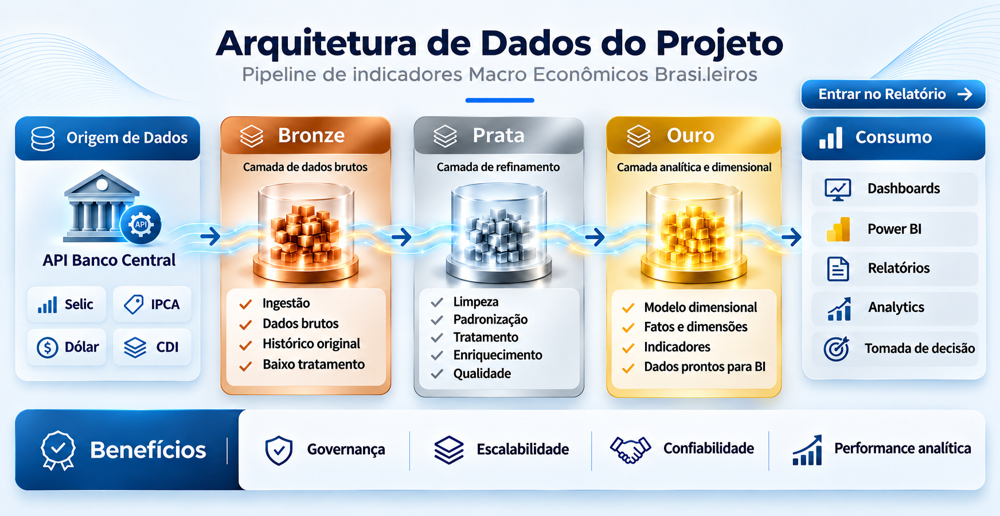

SÉRIE HISTÓRICA
Arquitetura de Dados do Projeto

Clique em Entrar no Relatório para explorar os dados.

Clique em Entrar no Relatório para explorar os dados.
Acompanhe 4 dos principais indicadores macroeconômicos
SÉRIE HISTÓRICA